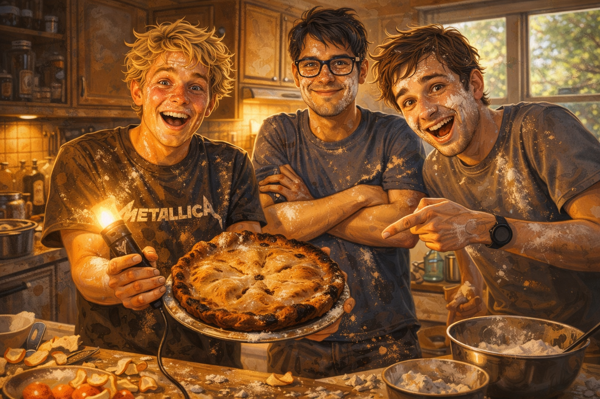

- Do you have a favourite family recipe? Who makes it best?
- What happens when you try to cook something without the recipe?
- The phrasal verb to give up means to stop trying. When was the last time you almost gave up in the kitchen?
After our travels, we decided to have a quiet weekend at home. Mike had an idea.
“My grandmother's apple pie,” he said. “It's the best in the world. If you try it, you'll understand what happiness tastes like.”
Dave raised an eyebrow. “Can you make it?”
“Of course! She gave me the recipe. If I follow it exactly, it will be perfect.”
Famous last words.
We went to the supermarket. Mike gave the list to Dave, who checked everything twice. Flour, sugar, butter, apples, cinnamon. “If we forget something,” Dave said, “we'll have to go back.” So we didn't forget.
Back at Mike's apartment, we started. The kitchen was small, but we didn't give up. Mike read the recipe aloud:
“Mix flour and butter until it looks like breadcrumbs.”
We mixed. It looked like breadcrumbs. Good.
“Add sugar and a pinch of salt.”
We added. Still good.
“Add cold water and form a dough.”
Mike added the water. Too much water. The dough became soup. “If I add more flour,” he said, “it will be fine.” He added flour. Too much flour. Now it was a dry lump.
Dave sighed. “If you had measured the water, this wouldn't have happened.”
Mike didn't give in. “It's fine! We can fix it!”
He added more butter. Then more flour. Then more water. The dough looked confused. We were confused.
Narrator: “Maybe we should give up and buy a pie?”
Mike: “Real men don't give up!”
Finally, after an hour of wrestling, we had something shaped like a pie. It went into the oven.
Thirty minutes later, we took it out. It looked… interesting. Some parts were burned. Some parts were still dough. But it smelled like apples and cinnamon.
We cut a slice. Mike took the first bite. His face went through many emotions: hope, doubt, surprise, then a smile.
“It tastes like…” he paused. “It tastes like my grandmother's kitchen. Not exactly her pie. But the feeling.”
Dave tried it. “If you hadn't added that extra water, it might have been terrible. But this chaos… it's actually good.”
We ate the whole thing. It was imperfect, lopsided, burned in places. But it was ours. And it was delicious.
Later, Mike called his grandmother. “Grandma, what's your secret ingredient?”
She laughed. “Love, dear. And a little bit of chaos. If you don't make mistakes, you don't make memories.”
Mike grinned. “Then we made a lot of memories.”